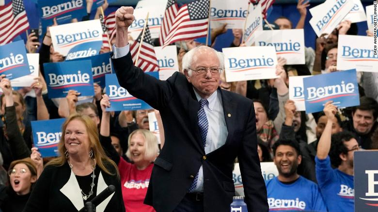

By Michael Warren, Jeff Zeleny, Lauren Fox and Fredreka Schouten, CNN
Updated 1201 GMT (2001 HKT) February 25, 2020
Click to watch the video Sanders: This is how we will fund 'Medicare for All'
Washington (CNN) - As Sen. Bernie Sanders emerges from his commanding victory in last weekend's Nevada caucuses, the Democratic establishment and the party's sizable moderate wing are increasingly anxious over his steady march to the presidential nomination -- yet they lack any sort of cohesive plan to stop him.
No outside group has taken the lead to focus resources against Sanders, and there are still too many candidates left in the race for moderates to coalesce around one standard bearer.
The fear isn't just over how Sanders and his far-left platform would fare against President Donald Trump in the general election, it's also about the effect his nomination could have on down-ballot races, particularly for Democrats running in tough elections in swing districts and states.
"It's not just that he'd lose the presidency, it's that he'd put our candidates at risk," said Rep. Scott Peters of California, who supports Mike Bloomberg and is a leader in the 101-member New Democrat Coalition, a caucus of moderate House Democrats.
Sen. Bob Menendez of New Jersey said "there's no question" Sanders will "create a real challenge for down ballot candidates" if he's the Democratic nominee.